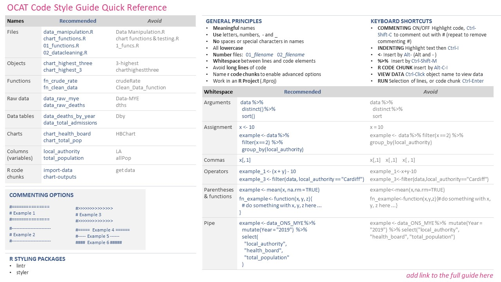

OCAT Style Guide for R Code
1 Introduction
Welcome to the OCAT style guide!
We’ve created this guide with the aim of improving readability and providing some consistency across R scripts and projects in the team.
In the words of the great Hadley Wickham, “good styling is like correct punctuation: you can manage without it, butitsuremakesthingseasiertoread”.
Just like any other language, there are often many ways of saying the same thing or getting to the same point in R. Whilst diversity is great, this guide sets out some key principles to provide some standardised format across the team.
We still want the “ay up” in the North and “hello” in the South, just with a similar format applied!
This guide covers:
This guide takes inspiration from the tidyverse style guide.
Figure 1.1: Code Quality Measurement, adapted from the book ‘Clean Code’ by Robert Martin
1.1 Quick Reference Guide
The below is a quick reference guide with key points. Please refer to specific sections within this guide for more detail.
